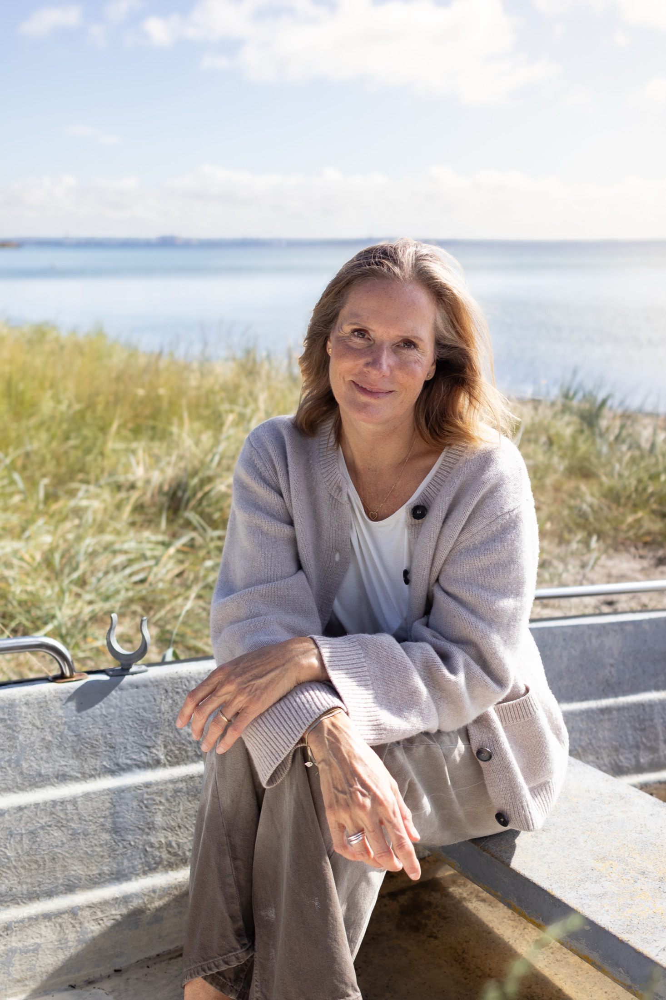

Sådan foregår et forløb
Kropsterapi med fokus på dig som helhed
En behandling giver dig frihed til at bearbejde det, du oplever i din krop og dit sind. Vores tanker, følelser og oplevelser sætter sig i kroppen, og kropsterapi er en vej til at give slip på det, der sidder fast.
Herunder kan du læse mere om, hvad du kan forvente – og hvordan et helt forløb hos mig er bygget op.
Hvad er en Manuvision-behandling?
Manuvision er en kropsterapeutisk behandlingsform, der arbejder med sammenhængen mellem krop og sind. Gennem blid berøring hjælper behandlingen dig med at slippe spændinger, som kroppen har holdt fast i – ofte uden at du selv er bevidst om det.
Læs mere
Jeg tilrettelægger altid behandlingen efter dét, du kommer med. Uanset om det er fysisk smerte, uro eller en følelse af at være "koblet fra" kroppen, tager vi udgangspunkt i din historie og dine behov.
Første behandling
Ved din første behandling starter vi altid med en kort samtale, hvor du fortæller, hvad du håber at få ud af forløbet, og hvor i kroppen du mærker mest.
Læs mere
Herefter ligger du afklædt til det tøj, du er tryg i, under et tæppe på briksen, mens jeg arbejder med blid berøring forskellige steder på kroppen. Der er ingen forventninger om, at noget bestemt skal ske – vi følger det, kroppen viser os.
Hvad sker der under en behandling hos mig?
En Manuvision-behandling hos mig starter altid med en kort samtale. Hvad bringer dig hertil? Hvad ønsker du dig, og hvad sker der i din krop lige nu? Er det fysiske udfordringer, mentale – eller begge dele?
Læs mere
Vi hænger sammen som hele mennesker – vi er ikke bare et hoved eller en krop. Det er sammenhængen her imellem, jeg finder mest interessant, og det er ofte her, vi finder svarene, når vi arbejder med kroppen sammen. Jeg hjælper dig gennem kropsterapien, guider dig i dit åndedræt og hjælper dig til at gå ind i de spændinger og blokeringer, du møder undervejs.
Jeg behandler for at komme ind til kernen af den udfordring, du står med – uanset om den er fysisk, mental eller begge dele. Det er nemlig lige præcis dér, vi sammen kan skabe en meningsfuld forandring for dig.
Jeg er stærk i min intuition og indføling, og jeg bruger mine kropsterapeutiske værktøjer til at hjælpe dig med at give slip på spændinger og blokeringer. Nogle gange giver det en følelsesmæssig reaktion. Andre gange en mere kropslig forløsning – en følelse af, at der pludselig er "hul igennem". Nogle oplever begge dele.
Står du et sted i livet, hvor du er ekstra udfordret, eller hvor du længe har overhørt vigtige signaler fra kroppen, kan den første behandling nogle gange føles som et skridt tilbage. Det kan være frustrerende – men det er samtidig et nødvendigt skridt på vejen til at blive bedre til at mærke ind i det, som føles svært eller tungt at bære på, eller måske give helt slip på det, der tynger dig.
Mine klienter fortæller ofte, at de efter et par behandlinger føler sig lettere og mere i kontakt med sig selv – som om de finder tilbage til den, de er. Nogle bliver også fysisk ømme, lidt ligesom efter en hård træningstur. Ømheden går typisk over efter en dag eller to, og så vil du mærke dig selv friere. Uanset hvad du oplever efter en behandling, er du altid velkommen til at kontakte mig, hvis du har brug for at tale om det.
Hvad kan du forvente efter en behandling?
Efter behandlingen anbefaler jeg, at du giver dig selv tid og ro resten af dagen, drikker rigeligt med vand og lytter til, hvad kroppen har brug for.
Læs mere
Nogle føler sig lette og energiske med det samme, mens andre har brug for en stille aften. Begge dele er en helt naturlig del af processen.
Hvilke reaktioner kan der komme?
Mange oplever en umiddelbar følelse af ro og lethed efter en behandling, mens andre først mærker en reaktion i dagene efter – det er helt normalt.
Læs mere
Reaktionerne kan blandt andet være træthed, øget tørst, mild ømhed i kroppen eller en bølge af følelser, der dukker op. Det er kroppens måde at bearbejde forandringen på, og det plejer at aftage i løbet af et par dage.
De fysiske og følelsesmæssige efterreaktioner
Kroppen kan reagere på flere måder efter en behandling – både fysisk og følelsesmæssigt. Det er tegn på, at kroppen er i gang med at bearbejde og finde en ny balance.
Forløbets gang:
Et Manuvision-forløb hos mig starter altid med en kort samtale. Hvad bringer dig hertil, hvad kan du mærke i kroppen, og hvad håber du at få ud af det? For at guide dig bedst muligt igennem forløbet, arbejder vi typisk i fire trin – fra den første samtale til en varig, roligere balance i hverdagen.
-
Konsultation
Læs mere
En konsultation er det første skridt i din proces med mig. Her taler vi om din fysiske og mentale udfordring, din baggrund og hvad du håber at opnå med behandlingen.
-
Samarbejde
Læs mere
Samarbejde i kropsterapi handler om, at vi arbejder tæt sammen gennem hele forløbet. Du bidrager med din krops oplevelser, og jeg hjælper med at aflæse og forstå de signaler, kroppen viser. Gennem behandling og dialog skaber vi en proces, hvor spændinger gradvist slipper, og du får bedre kontakt til din krop, mere ro i nervesystemet og større overskud i hverdagen.
-
Udvikling
Læs mere
Udvikling handler om den forandring, der opstår, når kroppen begynder at give slip på gamle spændinger og mønstre. Gennem kropsterapi kan du opleve øget kropsbevidsthed, bedre følelsesmæssig balance og en stærkere forbindelse til dig selv. Det er en proces, hvor du gradvist får mere energi, klarhed og indre ro.
-
Forbedring
Læs mere
Forbedring handler om konkrete ændringer i din krop og dit velvære i hverdagen. Det kan være mindre muskelspænding, færre smerter, bedre vejrtrækning og et roligere nervesystem. Målet er, at du mærker en tydelig og varig forskel, så du kan bevæge dig mere frit, leve med større overskud og føle dig bedre tilpas i din krop.
Klar til at starte dit forløb?
Book din første tid, så finder vi sammen ud af, hvad din krop har brug for.
Book din tid her